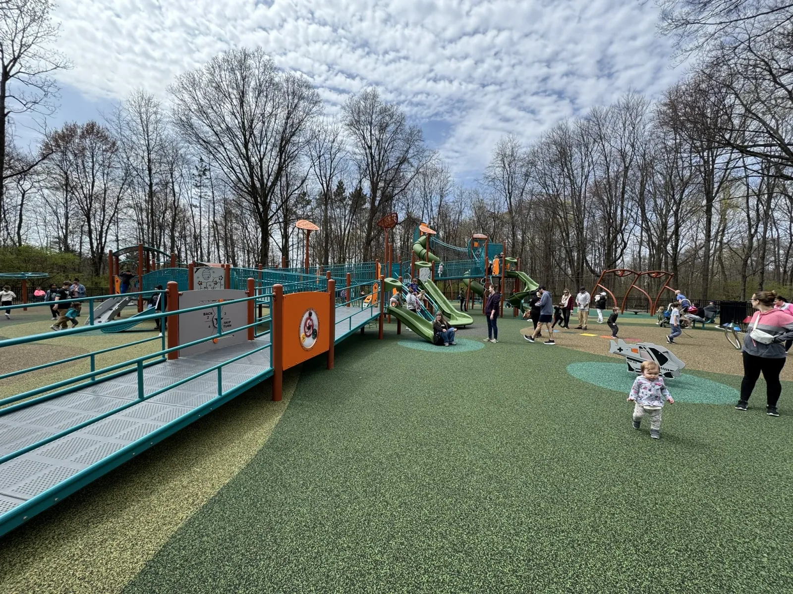
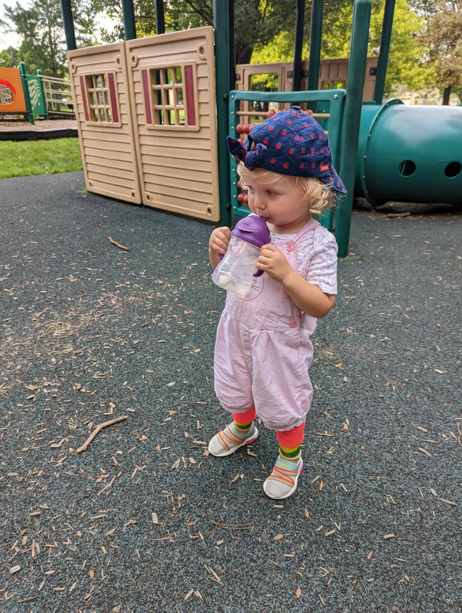
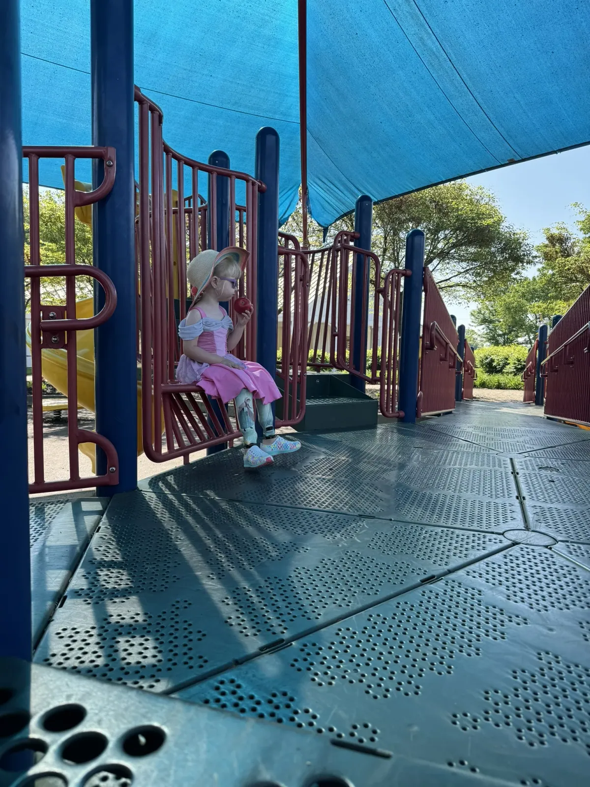

We've found a few playgrounds in the Central Ohio area that are accessible, spacious, and welcoming for kids with mobility differences. These parks offer smooth surfaces, inclusive equipment, and spaces where Gwen can play comfortably alongside other children.
Blendon Woods Inclusive Playground
Address: 4265 E Dublin Granville Rd, Westerville, OH 43081
View park info
This new inclusive playground at Blendon Woods is one of the largest and most accessible playgrounds in the area. It features a wide range of equipment, ramps, and inclusive design elements. Gwen loves the space to run and play without barriers. It's become one of our go-to spots.

Inclusive playground at Blendon Woods Metro Park
Fancyburg Park
Address: 3375 Kioka Ave, Upper Arlington, OH 43221
View park info
Fancyburg Park includes an accessible play structure with plenty of open space and inclusive play features. It's a great place to meet friends and enjoy some time outdoors with a variety of activities nearby.

Fancyburg Park in Upper Arlington is fully inclusive and packed with fun for all ages and abilities.
Darree Fields Playground
Address: 6259 Cosgray Rd, Dublin, OH 43016
View park info
This large playground is located beside the Miracle League Athletic Field in Dublin. It includes accessible features and smooth surfaces that make it easy for kids with prosthetics or mobility devices to get around and join in the fun.

Darree Fields offers shaded play and peaceful moments, apple included.